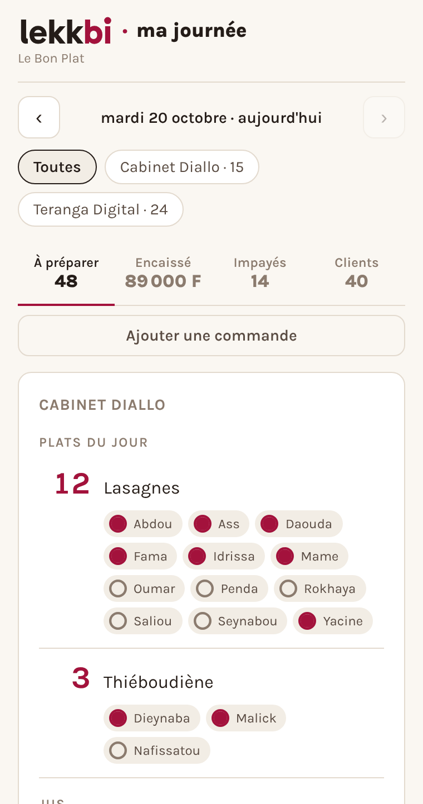

Première fois sur ce téléphone
Bienvenue
Écris ton nom une fois. Ce téléphone s'en souvient ensuite.
C'est lui qui te retrouve si tu changes de téléphone ou de navigateur.
Sert uniquement à te joindre s'il manque un règlement. Aucun mot de passe, aucun compte.
Bonjour ·
Pour quelqu'un d'autre
Chacun choisit son propre plat. Tu régleras le tout ensemble.
Commande validée
Aujourd'hui
Tu as déjà commandé
Pour les traiteurs
Tout ton midi dans un seul écran
Ton groupe WhatsApp ne change pas. Tes clients commandent comme avant — mais au lieu de recompter des messages, tu ouvres une page et tout y est.
La démo est une journée d'exemple : tu peux tout toucher, rien n'est enregistré.
- Rien à installerUne page web. Ni application, ni mise à jour.
- Prêt en dix minutesTon menu, tes entreprises, tes horaires.
- Pas de compte pour tes clientsIls cliquent sur le lien du groupe.

Et côté argent, le même jour exemple
Chaque règlement se coche quand il arrive. Tu vois qui a payé, qui te doit encore — même si c'était un autre jour.
Comment ça marche
- Tu écris ton menuUne fois pour la semaine. Chaque entreprise garde son lien, son heure de clôture, ses prix.
- Tes clients commandentIls cliquent sur le lien dans le groupe, choisissent, c'est fini. Ceux qui préfèrent t'appeler, tu les ajoutes toi-même.
- Tu prépares, et tu suisLes quantités par plat et par entreprise, les noms dessous, et qui a réglé. Sur ton téléphone.
Ce que ça remplace
Le sondage WhatsApp qu'on recompte à la main, le carnet où on note qui doit encore, et les messages « c'est bien toi qui as payé mardi ? ».
Ce que ça ne fait pas
Lekk bi ne touche pas à l'argent. Tes clients payent sur ton numéro, comme aujourd'hui. L'application note, elle n'encaisse pas.
Ce que ça coûte
Un abonnement, payé par toi — jamais par tes clients. Le prix n'est pas encore fixé : parlons-en, c'est aussi comme ça qu'il se fixera.
On en parle ?
Montre-moi comment tu fais aujourd'hui — ton menu, ton groupe, ta façon de compter. Je te dis en dix minutes si ça te fait gagner quelque chose. Si la réponse est non, je te le dirai aussi.
En parler sur WhatsAppTu travailles dans une entreprise servie et tu cherches à
commander ? Il te faut le lien de ton entreprise — il ressemble à
…/?s=yas et se trouve dans le groupe WhatsApp où passe le menu.
Pour voir à quoi ça ressemble, la démonstration est par ici.
1 · Ce que tu règles
0 F
Coche ce que ton paiement couvre.
Seules les commandes du jour non réglées apparaissent ici.
2 · Envoie l'argent
Ouvre ton application de paiement et envoie le montant à ce numéro. Lekk bi ne déplace pas d'argent : c'est toi qui l'envoies.
3 · Préviens le traiteur
Une fois l'argent parti, appuie sur le bouton : ta ligne passe en « réglé » chez le traiteur. La capture est facultative — elle l'aide à retrouver ton envoi dans son relevé.
Tu peux aussi faire un appui long puis « Coller » ici.
C'est noté
Commandes closes
C'est trop tard pour aujourd'hui
propulsé par Lekk bi